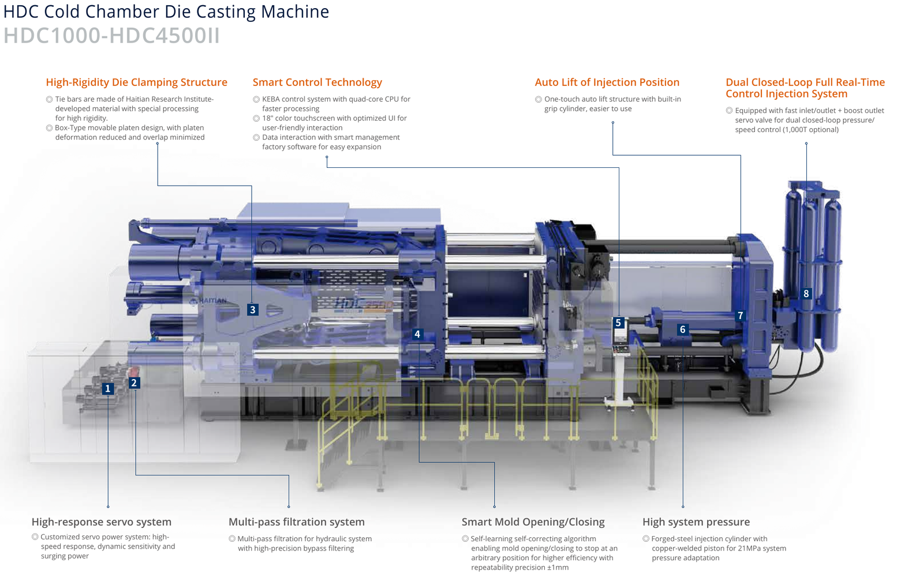

Giải pháp đúc áp lực thế hệ mới
Tăng năng suất. Ổn định chất lượng. Sẵn sàng cho nhà máy thông minh.
Máy đúc áp lực buồng nguội HDC II do Trung Nguyên TNT cung cấp là giải pháp dành cho doanh nghiệp muốn nâng cao chất lượng sản phẩm đúc, tối ưu hiệu suất sản xuất và mở rộng tự động hóa.
HDC II kết hợp hệ thống phun hiệu suất cao, điều khiển thông minh và kết cấu máy độ cứng lớn nhằm đáp ứng yêu cầu sản xuất hiện đại.
Điều khiển KEBA
Áp suất tới 21 MPa
Hệ phun HP nhiều giai đoạn
Smart Factory Ready
Robot Integration
Dải lực kẹp 200-4.500 tấn
Trung Nguyên TNT
Đối tác máy móc và tự động hóa sản xuất cho doanh nghiệp Việt
Công Ty Cổ Phần Thương Mại Dịch Vụ Trung Nguyên TNT có kinh nghiệm 15 năm trong lĩnh vực máy móc và tự động hóa sản xuất. TNT tập trung vào giải pháp giúp doanh nghiệp nâng cao năng suất, tối ưu chi phí và gia tăng năng lực cạnh tranh cho ngành công nghiệp Việt.
Những thách thức doanh nghiệp đang gặp
Khi chất lượng đúc và dữ liệu sản xuất chưa được kiểm soát đủ tốt
HDC II được định vị để giải quyết các vấn đề thường gặp ở dây chuyền đúc áp lực: phế phẩm, chu kỳ dài, khó tự động hóa và thiếu dữ liệu truy xuất.
Chất lượng đúc không ổn định
Sai lệch giữa các chu kỳ làm tăng tỷ lệ phế phẩm và ảnh hưởng chất lượng sản phẩm.
Chu kỳ sản xuất dài
Năng suất dây chuyền chưa đạt kỳ vọng, gây áp lực lên tiến độ giao hàng.
Khó tích hợp tự động hóa
Thiết bị cũ khó kết nối robot, phụ trợ và hệ thống quản lý sản xuất.
Khó kiểm soát dữ liệu
Thiếu công cụ giám sát chất lượng và truy xuất thông tin sản xuất theo từng shot.
Giải pháp HDC II
Tối ưu hiệu suất, ổn định chất lượng và sẵn sàng mở rộng tự động hóa
Hiệu suất cao hơn
- Hệ phun HP nhiều giai đoạn
- Gia tốc tối ưu
- Chu kỳ sản xuất nhanh
- Độ ổn định cao
Chất lượng ổn định hơn
- Điều khiển phun bán vòng kín hoặc vòng kín kép tùy chọn
- Kiểm soát áp suất và tốc độ theo thời gian thực
- Giảm sai lệch giữa các chu kỳ
Kết cấu bền vững
- Khung thép I-Beam
- Bàn máy Box-Type
- Thanh giằng độ cứng cao
- Giảm biến dạng, tăng tuổi thọ
Sẵn sàng cho Smart Factory
- Robot
- MES
- Hệ thống quản lý sản xuất
- Mở rộng tự động hóa

8 lợi thế công nghệ
Công nghệ phục vụ mục tiêu giảm sai lệch và tăng năng suất
- Hệ thống điều khiển KEBA
- Hệ phun HP nhiều giai đoạn
- Điều khiển phun vòng kín tùy chọn
- Áp suất hệ thống 19-21 MPa
- Đóng mở khuôn thông minh ±1 mm
- Khung máy độ cứng cao
- Tôi laser bề mặt khuôn
- Nạp Nitrogen tự động
Điểm nổi bật hệ phun
Hệ phun HP nhiều giai đoạn cho quá trình đúc ổn định hơn
Dải sản phẩm
Chọn dòng HDC II theo lực kẹp, sản phẩm và mức tự động hóa
HDC200-HDC850 II
Phù hợp nhà máy quy mô vừa và nhỏ, cần nền tảng máy ổn định, dễ vận hành và có khả năng tích hợp tự động hóa.
- HDC200
- HDC320
- HDC450
- HDC550
- HDC650
- HDC700
- HDC850
HDC1000-HDC4500 II
Dành cho sản phẩm lớn, yêu cầu lực kẹp cao, kiểm soát dữ liệu và khả năng tự động hóa trong dây chuyền.
- HDC1000
- HDC1300
- HDC1650
- HDC2000
- HDC2500
- HDC3000
- HDC3500
- HDC4000
- HDC4500
Ứng dụng
Phù hợp cho các sản phẩm đúc áp lực yêu cầu độ ổn định cao
Thông số nổi bật
Dải lực kẹp HDC II từ 200 đến 4.500 tấn
Bảng dưới đây giúp khoanh vùng nhanh nhóm máy theo lực kẹp. Thông số chi tiết cần đối chiếu theo model, khuôn, vật liệu, sản lượng và option thực tế.
| Model | Lực kẹp | Model | Lực kẹp |
|---|---|---|---|
| HDC200 II | 2.000 kN | HDC1000 II | 10.000 kN |
| HDC320 II | 3.200 kN | HDC1300 II | 13.000 kN |
| HDC450 II | 4.500 kN | HDC1650 II | 16.500 kN |
| HDC550 II | 5.500 kN | HDC2000 II | 20.000 kN |
| HDC650 II | 6.500 kN | HDC2500 II | 25.000 kN |
| HDC700 II | 7.000 kN | HDC3000 II | 30.000 kN |
| HDC850 II | 8.500 kN | HDC3500 II | 35.000 kN |
| HDC4000 II | 40.000 kN | ||
| HDC4500 II | 45.000 kN |
Quy trình triển khai
Từ khảo sát sản phẩm đến vận hành và bảo trì
Trung Nguyên TNT tư vấn theo sản phẩm, sản lượng, ngân sách đầu tư và mức độ tự động hóa mong muốn của từng doanh nghiệp.
- Tiếp nhận yêu cầu
- Khảo sát sản phẩm
- Đề xuất cấu hình
- Thử khuôn
- Lắp đặt
- Đào tạo
- Bảo trì
- Hỗ trợ kỹ thuật
Nội dung cần bổ sung
Các tư liệu nên thêm để landing page chốt lead mạnh hơn
- Logo khách hàng thực tế và dự án tiêu biểu đã triển khai.
- Ảnh lắp đặt, chạy thử, đào tạo, robot và dây chuyền thực tế.
- Video vận hành máy, robot, thành phẩm hoặc dây chuyền.
- Số liệu doanh nghiệp, chứng nhận, testimonial và chính sách bảo hành.
FAQ
Câu hỏi thường gặp
Làm sao chọn đúng lực kẹp?
Đội ngũ Trung Nguyên TNT sẽ tư vấn theo sản phẩm, khuôn, vật liệu và sản lượng.
Có tích hợp robot không?
Có. HDC II hỗ trợ định hướng tích hợp robot và dây chuyền tự động hóa.
Có hỗ trợ Smart Factory không?
Có. Máy có định hướng kết nối hệ thống quản lý sản xuất và dữ liệu chất lượng.
Có đào tạo vận hành?
Có. Quy trình triển khai có đào tạo vận hành và hướng dẫn kiểm soát dữ liệu.
Có phụ tùng và bảo trì?
Có. Chính sách cụ thể cần xác nhận theo cấu hình, địa điểm và hợp đồng dự án.
Final CTA
Sẵn sàng nâng cấp dây chuyền đúc áp lực?
Đội ngũ kỹ sư Trung Nguyên TNT sẵn sàng khảo sát, tư vấn và đề xuất giải pháp phù hợp với sản phẩm, sản lượng và ngân sách đầu tư của doanh nghiệp.
Hotline miền Nam: 0986 403 790
Chi nhánh miền Bắc: 098 210 3223
dinhduong@trungnguyentw.com
Miền Bắc: 33 Yết Kiêu, Phường Tân Hưng, TP Hải Phòng
Miền Nam: 439/60 Hồ Học Lãm, Phường An Lạc, TP Hồ Chí Minh